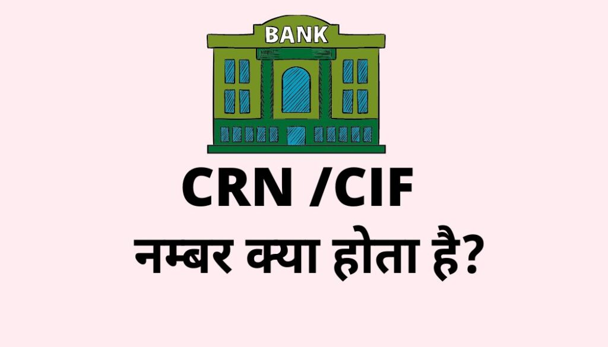

दोस्तों मुझे उम्मीद है कि आपने जरूर ही किसी न किसी बैंक में खाता खुलवा रखा होगा, और आपके पास उस बैंक का पासबुक, इंटरनेट बैंकिंग का एक्सेस, चेक बुक, क्रेडिट कार्ड, डेबिट कार्ड जरूर होगा।आप बैंकिंग में उपयोग होने वाले इन Services को Use भी करते होंगे।
CRN Number Full Form:-
CRN नम्बर का Full Form इस प्रकार है –
C For –Customer (कस्टमर)
R For –Reference (रेफ़्रेन्स)
N For –Number (नम्बर)
CRN –Customer Reference Number इसे हिंदी में हम ग्राहक निर्देश संख्या भी कह सकते हैं ।
CRN Number क्या होता है?(What Is CRN Number In Hindi):-
(CRN)Customer Reference Number बैंक के द्वारा अपने ग्राहकों को दिया जाने वाला एक Unique नंबर होता है जिससे बैंक को अपने ग्राहक का पहचान करने में आसानी होती है,दोस्तों आपका खाता जिस भी बैंक में है उस बैंक में खाता खुलवाते समय आपको जिस तरह से अकाउंट नंबर दिया जाता है उसी तरह से एक CRN नंबर भी दिया जाता है CRN नंबर एक Unique Number होता है ,यह सभी customer के लिए अलग अलग होता है,कई Banks इस CRN(Customer Reference Number) को CIF(Customer Information File)नंबर भी कहते हैं।तो आपका जिस भी बैंक में खाता हो CRN और CIF दोनों का मतलब एक ही है।
उदाहरण के लिए:-
मान लेते हैं आपका खाता कोटक महिंद्रा बैंक में है और आपका खाता संख्या-00076545***77 है,फिर आप उसी बैंक में अगर फिक्स डिपाजिट करवाते हैं तो आपको एक FD Account Number दिया जाएगा जो आपके खाता संख्या से अलग होगा, पुनः अगर आप कोई लोन लेते हैं तो आपको एक लोन अकाउंट नंबर भी दिया जाएगा, इस तरह से आप बैंक के जितने भी सेवाएं लेंगे आपको उतने Account Number दिए जाएंगे, लेकिन इन सभी अकाउंट को मैनेज करने के लिए आपके पास एक ही CRN नंबर या CIF नंबर दिया जाएगा।
CRN नम्बर का क्या उपयोग है?(Uses Of CRN Number)
बैंक CRN -Customer Reference Number नंबर का उपयोग अपने कस्टमर को दिए जाने वाले बैंकिंग सेवाओं को बेहतर बनाने के लिए करती है जैसे:-
- Online बैंकिंग सेवाओं में जैसे अगर आप इंटरनेट बैंकिंग, या मोबाइल बैंकिंग का रजिस्ट्रेशन कराना चाहते हैं या लॉगइन करना चाहते हैं, तो आपको यहां पर CRN -Customer Reference Number मांगा जाएगा।
- एक बैंक में एक कस्टमर के कई तरह के खाते होते हैं जैसे बचत खाता(Saving Account), चालू खाता (Current Account),Overdraft Account etc इन सभी खातों के अकाउंट नंबर अलग-अलग होते हैं, इन सभी खातों को एक साथ मैनेज करने के लिए CRN नंबर का उपयोग किया जाता है।
{kind=link}

CRN Number कैसे पता करें (How To Know CRN Number)?
CRN नंबर पता करने के लिए आपके पास कई साधन है नीचे दिए गए कि नहीं एक प्रोसेस को फॉलो करके आप अपना CRN नंबर पता कर सकते हैं:-
- पासबुक का पहला पन्ना उलट कर आप देखेंगे तो आपको आपका अकाउंट नंबर और, CRN नंबर मिल जाएगा।
- अगर आप क्रेडिट कार्ड Use करते हैं, तो क्रेडिट कार्ड पर ही कई सारे बैंक का CRN नंबर लिखा हुआ होता है।
- अगर आपको इन सब के बाद भी CRN नंबर नहीं पता चलता है तो आप बैंक जाकर भी अपना CRN नंबर पता कर सकते हैं।
- आप अपने खाते के इंटरनेट बैंकिंग को लॉगिन करके भी अपना CRN नंबर पता कर सकते हैं।
- कई बैंकों के चेक बुक पर भी कस्टमर का CRN नंबर लिखा हुआ होता है
CRN Number Activate कैसे करें?(How To Activate Kotak CRN Number)
दोस्तों जैसा कि आपको पता है की किसी भी बैंक का CRN नंबर या सीआईएफ नंबर कस्टमर का बैंक में आईडेंटिटी होता है जहां तक CRN नंबर को एक्टिवेट करने की बात है तो जब भी आप किसी बैंक में अपना खाता खुलवाते हैं, तो आपको CRN नंबर एक्टिवेट करके ही दिया जाता है, अगर आपका बैंक अकाउंट एक्टिव है तो आपका CRN नंबर भी एक्टिव ही होगा इसे एक्टिवेट करने की कोई आवश्यकता नहीं है।
Kotak Mahindra Bank CRN Number Kaise Pata Kare-Nikalen?
दोस्तों अगर आप का खाता Kotak Mahindra Bank में है तो आप अपना CRN नंबर नीचे दिए गए किसी भी एक स्टेप को फॉलो करके पता कर सकते हैं:-
Kotak Mahindra Bank के Debit Card या Credit Card से पता कर सकते हैं:-
अगर आपके पास कोटक महिंद्रा बैंक का डेबिट कार्ड या क्रेडिट कार्ड है तो आप क्रेडिट कार्ड के बाएं तरफ नीचे में देखेंगे कि आपका CRN नंबर लिखा हुआ है यहां से आप अपना CRN नंबर पता कर सकते हैं।
SMS के माध्यम से Kotak Mahindra bank का CRN नम्बर पता कर सकते हैं :-
दोस्तों आप कोटक महिंद्रा बैंक के कस्टमर केयर में एसएमएस करके भी अपना CRN नंबर पता कर सकते हैं इसके लिए आपको अपने रजिस्टर्ड मोबाइल नंबर से CRN टाइप करना है और इसे 9971056767 पर भेज देना है ,कुछ ही मिनटों में आपके आपके रेजिस्टर्ड मोबाइल पर SMS के माध्यम से kotak mahindra bank का CRN नम्बर प्राप्त को जाएगा ।
Kotak Bank खाते के Passbook से CRN नम्बर पता कर सकते हैं
आप अपने बैंक के पासबुक से भी अपना CRN पता कर सकते हैं, किसके लिए आपको अपने कोटक महिंद्रा बैंक के पासबुक को अपने हाथ में लेना है और उसका पहला पन्ना पलटना है यहां आप देखेंगे कि आपके कोटक महिंद्रा बैंक के अकाउंट से संबंधित सारी जानकारियां लिखी हुई रहती है यहां आपको आपका CRN नंबर मिल जाएगा ।
Kotak Mobile Banking के माध्यम से CRN नम्बर पता कर सकते हैं
अगर आपके पास कोटक महिंद्रा बैंक का मोबाइल बैंकिंग पहले से एक्टिवेट है तो आप अपने मोबाइल बैंकिंग के यूजर आईडी और पासवर्ड से लॉगिन करके प्रोफाइल सेक्शन में जाकर अपना CRN नंबर पता कर सकते हैं, लेकिन अगर आपके पास मोबाइल बैंकिंग पहले से टिकट नहीं है तो आप इसमें लॉगिन नहीं कर पाएंगे क्योंकि मोबाइल बैंकिंग लॉगइन रजिस्ट्रेशन करने के लिए आपको सबसे पहले CRN नंबर ही मांगा जाता है हेलो हेलो गांव में है।
चेक बुक के माध्यम से CRN नम्बर पता कर सकते हैं
दोस्तों अगर आपने कोटक महिंद्रा बैंक में चेक बुक की सर्विस भी ले रखी है, तो आपको अपना चेक बुक निकालना है और चेक बुक के पहले पेज पर ही आपका CRN नंबर लिखा हुआ होता है इस तरह से आप चेक बुक से भी अपना CRN नंबर पता कर सकते हैं।
Internet Banking से Kotak Mahindra Bank CRN नम्बर पता कर सकते हैं
आपको सबसे पहले अपना Kotak bank का Internet Banking लॉगिन कर लेना है उसके बाद आपको प्रोफ़ायल सेक्शन में जाकर क्लिक करना है ,यह आप देखेंगे की आपको आके Kotak महिंद्रा बैंक का CRN नम्बर के साथ साथ सभी जानकारी जैसे Moible ,Email etc सभी जानकारी मिल जाएँगे ।
Also Read:-BRKGB Internet Banking,पूरी जानकारी हिंदी में।
CRN Number Jana Bank-in Hindi
दोस्तों अगर जाना बैंक में आपका खाता है तो आप CRN नंबर पता करने के लिए अपने पासबुक, इंटरनेट बैंकिंग, मोबाइल बैंकिंग, या ब्रांच जा करके पता कर सकते हैं इसके लिए आपको बहुत ज्यादा मेहनत करने की आवश्यकता नहीं है। जिस तरह से कोटक महिंद्रा बैंक का आज CRN नंबर का पता करेंगे उसी तरह से आप जाना बैंक का भी CRN नंबर पता कर सकते हैं।
Debit Card में CRN नम्बर क्या होता है ?(CRN Number In Debit Card)
जैसा कि आपको पता है की CRN नंबर यूनिक होता है, कितने भी खाते आपके एक बैंक में क्यों ना हो उनका CRN नंबर एक ही होगा इसी तरह से डेबिट कार्ड में भी अकाउंट होल्डर का CRN नंबर लिखा हुआ होता है, यह कार्ड के बाई तरफ नीचे में लिखा हुआ होता है।
Also Read:-How to Generate SBI ATM Pin?
GST में CRN नम्बर क्या होता है ?(CRN Number In GST)
जीएसटी सर्विस के अंदर जब आप अपने जीएसटी से रिलेटेड कोई सर्विस रिक्वेस्ट करते हैं, या अपने जीएसटी में कोई बदलाव करते हैं तो आपको उस सर्विस रिक्वेस्ट के बदले एक CRN नंबर दिया जाता है, यह सारे नंबर आपको आपके सर्विस रिक्वेस्ट के Status को पता करने के लिए दिया जाता है।
Chhalan में CRN नम्बर क्या होता है ?(CRN Number In Chhalan)
किसी भी बैंक में चालान करवाते समय आपको एक रिफरेंस नंबर दिया जाता है जिसे हम CRN नंबर कहते हैं इस CRN नम्बर से आप भविष्य में पता कर सकते हैं कि आपने जो चालान कटवाया था वह खाताधारक के खाते में क्रेडिट हुआ या नहीं।
CRN Number खो जाने पर क्या करे?
- CRN नम्बर खो जाने के बाद आपको सबसे पहले अपने बैंक में खबर करना है।
- crn नम्बर खो जाने पर आपको ऊपर बताए हुए किसी भी स्टेप्स को फ़ॉलो करके अपना crn नम्बर पुनः पता कर लेना है।
- सबसे आसान है आप बैंक जाए और CRN नम्बर पता कर ले।
Frequently Asked Quenstion and Answer
क्या CRN number और Account Number Same होता है ?
नहीं एक कस्टमर के किसी भी बैंक में एक से जयदा Account नम्बर हो सकता है लेकिन ERN नम्बर एक ही रहता है।
CRN Number कितनी डिजिट का होता है ?
सामान्य तौर पर बैंक का CRN नम्बर नाइन (9) अंक का होता है।
CRN और CIF नम्बर में क्या अंतर है?
CRN नम्बर और CIF नम्बर का काम Same होता है,बस कुछ बैंक इसे CRN कहते हैं और कुछ CIF कहते है।
SBI(STATE BANK OF INDIA) में CIF नम्बर क्या होता है?
CIF नम्बर कस्टमर Identification Form होता है इसकी मदद से customer का Biodata पता चल जाता है।